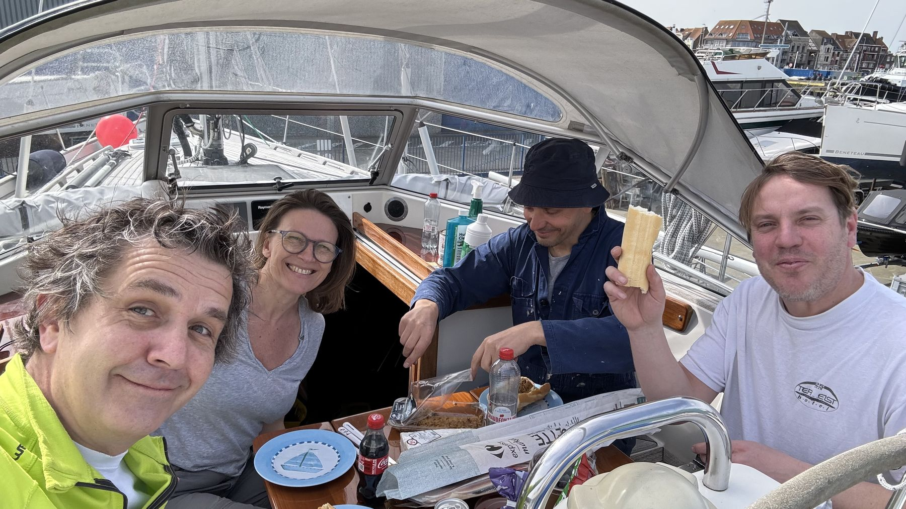

17 mei 2024
Een half jaar klussen in 2 minuten
Een kleine impressie van een half jaar boot-werkzaamheden in een kort filmke. Ambiance!
Video volgt

17 mei 2024
Een kleine impressie van een half jaar boot-werkzaamheden in een kort filmke. Ambiance!